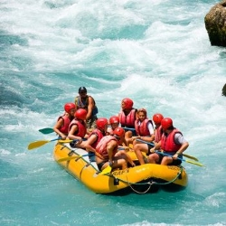
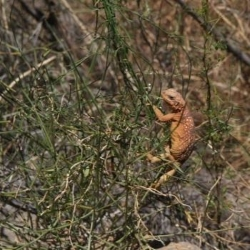
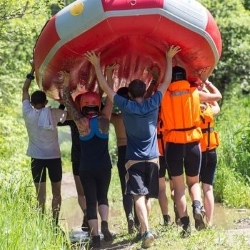
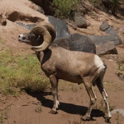
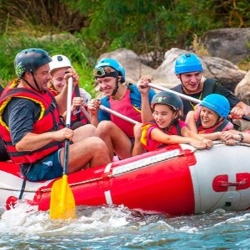

Next Summer booking open now!
Make sure to reserve your date now!
We have limited runs on each river and they go fast.
If you have only certain dates that you can get away you should
Highlights from the past season




